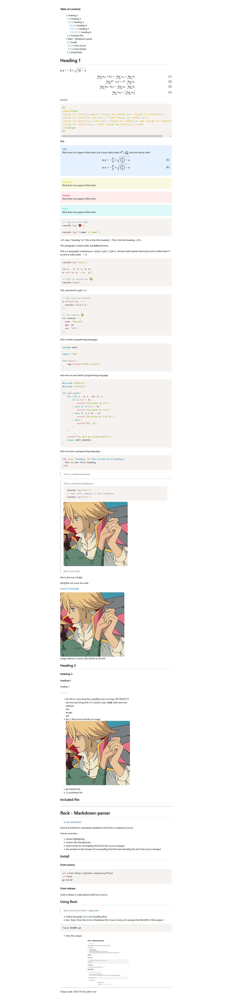

Table of contents
- 1: Web documentation for Fleck
- 2: fleck - Markdown-parser
- 2.1: Install
- 2.1.1: From source
- 2.1.2: From release
- 2.2: Using fleck:
- 3: Features
- 3.1: Example
- 3.2: Markdown
- 3.2.1: Extra features
- 3.2.1.1: Blockquotes:
- 3.3: Fleck's features
- 4: Usage
- 4.1: Overview
- 4.2: Help
- 4.3: Command line option reference
- 4.3.1: `--help`
- 4.3.2: `--watch`
- 4.3.3: `--syntax`
- 4.3.4: `--live-preview`
- 4.3.5: `--port`
- 4.3.6: `--debug`
- 4.3.7: `--version`
- 4.3.8: `--no-prefix`
- 4.3.9: `--no-template`
- 4.3.10: `--silent`
- 4.3.11: `--toc`
- 4.3.12: `--toc-full`
- 4.3.13: `--preprocessor-enabled`
- 4.3.14: `--shell-macro-enabled`
- 4.3.15: `--keep-temp`
- 5: Macros:
- 5.0.0.1: Include other markdown files
- 5.0.0.2: Include the current date:
- 5.0.0.3: Include command output:
- 6: Builds
- 6.1: Differences
- 7: Architecture
- 7.1: Procedure:
- 7.2: Fleck's sequences in depth
- 7.2.1: Preprocessor
- 7.2.2: Lexer
- 7.2.3: Parser
- 8: Structure
- 8.1: Directories
- 8.1.1: cli
- 8.1.2: core
- 8.1.3: doc
- 8.1.4: generator
- 8.1.5: logger
- 8.1.6: parser
- 8.1.7: preprocessor
- 8.1.8: scanner
Web documentation for Fleck
Source for this document, link
fleck - Markdown-parser
Fleck is intended for outputting standalone html from a markdown source.
Feature overview:
- syntax highlighting
- custom alert blockquotes
- watch mode for recompiling the html if the source changed
- live-preview in the browser for recompiling the html and reloading the tab if the source changed
Install
From source
git clone https://github.com/xnacly/fleck
cd fleck
go build
From release
Until a release is ready please build from source.
Using fleck:
Read more about fleck's usage here
- Follow the guide above for installing fleck
- Run
fleckfrom the cli on a Markdown file of your choice, for example the README of this project:
fleck README.md
- View the output:

Features
Example
View the source for the test.md file here.
Compiled using fleck:
fleck -preprocessor-enabled -toc -toc-full -shell-macro-enabled -syntax test.md
# 2023/04/19 09:31:04 warn: 'shell-macro-enabled' flag specified, this can harm your operating system and make it vulnerable for attack, proceed at your own digression
# 2023/04/19 09:31:04 info: preprocessor enabled, starting...
# 2023/04/19 09:31:04 warn: found @shell macro: '@shell{whoami}', executing 'whoami'
# 2023/04/19 09:31:04 info: executed 'whoami' command
# 2023/04/19 09:31:04 info: preprocessor finished, took 6.092121ms
# 2023/04/19 09:31:04 info: compiled 'test.md.fleck', took: 10.278704ms
This spits out the following:
Markdown
Fleck implements the basic markdown features everyone needs, while extending markdown with the fleck dialect, which introduces several macros.
- [x] Headers
- [x] Blockquotes
- [x] unordered Lists
- [ ] to-do lists
- [x] Code blocks
- [x] Code inline
- [x] Bold
- [x] Italic
- [x] Image
- [x] Link
- [x] horizontal ruler
Extra features
Blockquotes:
Fleck supports blockquotes with titles. To specify a title for a blockquote, format it as follows:
> **Title**
>
> text
Fleck extracts the Title in the first line of the blockquote between ** and **.
After that all supported titles are colored and prefixed with a matching emoji.
Currently supported are:
- info
- warning
- danger
Example:

Fleck's features
- Fleck escapes html characters and does therefore not support inline html.
- Fleck uses prism to provide syntax highlighting for code blocks
- Fleck minifies the output html by default
- Fleck provides a default template for the compiled html to be written to
- Fleck allows the user to view their markdown via a live preview, which recompiles after changes and reloads the page
Usage
Overview
fleck is called like so:
# fleck [options] file
fleck README.md
This command creates a file called README.html, which includes the generated html output.
Help
Calling fleck with the --help flag will produce the following output:
Usage:
fleck [Options] file
Options:
Name Default Requires Description
--help false prints the help page, exists
--watch false watches for changes in the specified page, recompiles the file on change
--syntax false enables syntax highlighting for code blocks in the output
--live-preview false same as watch, serves the compiled html, reloads tab if change occured
--debug false enables debug logs
--version false prints version and build information, exists
--no-prefix false hide the informational comments generated in the output html
--no-template false write html output to a file without the default html scaffolding
--silent false disables info logs, reduces output significantly
--toc false generates a table of contents at the top of the output file, includes headings 1,2,3
--toc-full false toc generates a full toc, includes headings 1,2,3,4,5,6
--keep-temp false preprocessor-enabled keeps fleck from removing temporary files, used for debug purposes
--preprocessor-enabled false enables the preprocessor to replace macros, decreases performance
--shell-macro-enabled false preprocessor-enabled enables the dangerous '@shell{command}' macro
--port 12345 live-preview specify the port for '--live-preview' to be served on
Online documentation: https://github.com/xnacly/fleck
See Macros for more information about the preprocessor and macros.
Command line option reference
`--help`
Prints the help page, containing the name of all available options, their default values, which other option they require and a description.
A short help is printed if fleck is called without any arguments:
$ fleck
Usage:
fleck [Options] file
Run 'fleck --help' for an in depth help page
2023/04/24 10:14:35 error: not enough arguments, specify an input file
exit status 1
`--watch`
The watch option makes fleck watch for changes in the specified source file:
$ fleck --watch README.md
2023/04/24 10:16:13 info: compiled 'README.md', took: 262.228µs
2023/04/24 10:16:13 info: watching for changes...
Fleck checks every 100ms if a change occured. When this happens the screen is cleared and fleck tells the user how many times it already recompiled the source.:
2023/04/24 10:17:34 info: detected change, recompiling... (1)
2023/04/24 10:17:34 info: compiled 'README.md', took: 500.561µs
2023/04/24 10:17:34 info: detected change, recompiling... (2)
2023/04/24 10:17:34 info: compiled 'README.md', took: 720.964µs
Fleck checks if the source file changed by comparing its last modification time and its size with the information gathered in the previous iteration.
`--syntax`
The --syntax flag instructs fleck to inject three assets into the generated template.
The first is the prism default css file. The second is the prism javascript source and the third is the language autoloader, which detects used languages in the generated html and automatically loads the corresponding themes.
$ fleck --syntax README.md
2023/04/24 10:23:18 info: compiled 'README.md', took: 186.067µs
A code block in the resulting html, looks like the following:
`--live-preview`
Just like --watch, this option tells fleck to periodically check for changes in the source file.
The drastic difference here is, that fleck starts a websocket connection and a webserver which serves the generated html and injects this html with a javascript script to connect the client to the server.
If fleck detects a change, it recompiles the source, exactly like laid out in the --watch reference. After that fleck sends an event to the client via the websocket connection. The client reacts and reloads itself. (HMR via the injected js script is planned, this would allow us to simply use the body.innerHTML directive to update the content)
Fleck also opens a tab supplied with the served html in the default browser of the operating system upon starting with the --live-preview flag.
$ fleck --live-preview README.md
2023/04/24 10:36:41 info: starting live preview
2023/04/24 10:36:41 info: listening on http://localhost:12345/README.html
2023/04/24 10:36:41 info: compiled 'README.md', took: 5.608431ms
2023/04/24 10:36:41 info: watching for changes...
The opened tab in the default browser:

`--port`
By default the --live-preview is started on port 12345, to change this behaviour invoke fleck with the --port=<port> option:
$ fleck --live-preview --port=12701 README.md
2023/04/24 13:00:52 info: starting live preview
2023/04/24 13:00:52 info: listening on http://localhost:12701/README.html
2023/04/24 13:00:52 info: compiled 'README.md', took: 2.527078ms
2023/04/24 13:00:52 info: watching for changes...
`--debug`
Debug simply enables more logs:
- lexed tokens, with type, content, position and line:
[ 'HASH' | 0 | 0 | '' ] [ 'TEXT' | 1 | 0 | ' fleck ' ] [ 'DASH' | 8 | 0 | '' ] [ 'TEXT' | 9 | 0 | ' Markdown' ] [ 'DASH' | 18 | 0 | '' ] [ 'TEXT' | 19 | 0 | 'parser' ] [ 'NEWLINE' | 25 | 0 | '' ] [ 'EMPTYLINE' | 0 | 1 | '' ] - parsed expressions, output as html in console
<h1 id="fleck - Markdown-parser">fleck - Markdown-parser</h1> - parsed cli arguments and options
{
InputFile: 'README.md',
Flags: [
--debug: 'true',
--version: 'false',
--toc: 'false',
--watch: 'false',
--live-preview: 'false',
--silent: 'false',
--toc-full: 'false',
--help: 'false',
--no-prefix: 'false',
--no-template: 'false',
--preprocessor-enabled: 'false',
--syntax: 'false',
--shell-macro-enabled: 'false',
--keep-temp: 'false',
], Args: [
--port: '12345',
]
}]
- components and their information
2023/04/24 10:56:58 debug: [starting scanner]
2023/04/24 11:12:23 debug: [lexed 143 token, took 1.434954ms]
2023/04/24 11:12:23 debug: [starting parser]
2023/04/24 11:12:23 debug: [parsed 15 items, took 22.633µs]
2023/04/24 11:16:55 debug: [wrote generated html to 'README.html' using the default template, took: 2.799551ms]
2023/04/24 11:16:55 debug: [cleanup, removing: 'README.md.fleck']
This mode is useful for debugging the components used in the compilation process.
`--version`
This option prints information about the current version, the build time as well as the person who compiled the build, afterwards exits with exit code 0.
fleck: [ver='0.0.2-alpha+livepreview.1'][buildAt='2023-04-24T10:46:46+0200'][buildBy='xnacly-47723417+xNaCly@users.noreply.github.com']
`--no-prefix`
By default fleck prefixes the generated html in the resulting file with the following comment:
<!-- This file was generated using the fleck markdown to html compiler (https://github.com/xnacly/fleck) -->
<!-- If you found a bug in the generated html, please create a bug report here: https://github.com/xnacly/fleck/issues/new -->
<!-- fleck was invoked as follows:fleck --debug --preprocessor-enabled README.md-->
The comment contains an info about the way fleck was invoked, as well as where to report bugs.
To disable this prefix, simply invoke fleck with the --no-prefix:
$ fleck --silent README.md
$ cp README.html README_full.html
$ fleck --silent --no-prefix README.md
Diff between the full template and the template without the prefix:
diff --git a/README.html b/README_full.html
index f62f930..6174f41 100755
--- a/README.html
+++ b/README_full.html
@@ -1,3 +1,6 @@
+<!-- This file was generated using the fleck markdown to html compiler (https:/ /github.com/xnacly/fleck) -->
+<!-- If you found a bug in the generated html, please create a bug report here: https://github.com/xnacly/fleck/issues/new -->
+<!-- fleck was invoked as follows:fleck --silent README.md-->
<!DOCTYPE html><html lang="en"><head><meta charset="UTF-8" /><meta name="genera
tor" content="fleck0.0.2-alpha+livepreview.1" /><title>README</title><style>
:root {
--gray: #d0d7de;
`--no-template`
By default fleck writes to a template. (In the future fleck will support custom templates, supplied via the --template=<file.html> argument.)
To change this behaviour, call fleck with the --no-template option, if invoked like this, fleck will only output the generated html, without any boilerplate, scaffolding or styling.
$ fleck --silent README.md
$ cp README.html README_full.html
$ fleck --silent README.md
Diff between the lines of the template output and the lines of the generated html without the scaffolding:
$ wc -l README_full.html README.html
153 README_full.html
10 README.html
163 total
`--silent`
This flag suppresses info logs, keeping the output of fleck neat and clean.
Differences between silent enabled and disabled
$ fleck README.md
2023/04/24 12:51:16 info: compiled 'README.md', took: 2.750417ms
$ fleck --silent README.md
`--toc`
Fleck supports the generation of a table of contents. The html output is prefixed with the table of contents. By default fleck includes all headings from 1 until and including 3 in this table of content.
$ fleck --toc --silent README.md
Rendered table of content output:
`--toc-full`
To include all headings from 1 until and including 6, invoke fleck with --toc-full as well as --toc:
$fleck --toc --toc-full --silent test.md
The full table of content:

`--preprocessor-enabled`
By default the preprocessor for flecks macros is disabled, to enable macro execution and expansion, run fleck with --preprocessor-enabled flag:
$ fleck --preprocessor-enabled test.md
2023/04/24 13:03:31 info: preprocessor enabled, starting...
2023/04/24 13:03:31 info: found '@shell' macro, but shell macros are disabled, use '--shell-macro-enabled' to enable this macro
2023/04/24 13:03:31 info: preprocessor finished, took 3.81964ms
2023/04/24 13:03:31 info: compiled 'test.md.fleck', took: 8.071517ms
The preprocessor produces an info log if it finds a shell-macro while the --shell-macro-enabled flag wasn't provided.
`--shell-macro-enabled`
The @shell{cmd} macro can be used to run commands on the compiling system and replace the macro with the output of the command.
Warning As this macro is obviously very insecure it is disabled by default, use the--shell-macro-enabledflag in combination with the--preprocessor-enabledflag to enable the execution of shell macros.
$ fleck --preprocessor-enabled --shell-macro-enabled test.md
2023/04/24 13:06:28 warn: 'shell-macro-enabled' flag specified, this can harm your operating system and make it vulnerable for attack, proceed at your own digression
2023/04/24 13:06:28 info: preprocessor enabled, starting...
2023/04/24 13:06:28 warn: found @shell macro: '@shell{whoami}', executing 'whoami'
2023/04/24 13:06:28 info: executed 'whoami' command
2023/04/24 13:06:28 info: preprocessor finished, took 6.478482ms
2023/04/24 13:06:28 info: compiled 'test.md.fleck', took: 19
`--keep-temp`
Fleck's preprocessor produces temporary files ending with *.fleck.
The preprocessor generates these files after reading the source file and expanding macros.
These temporary files are then passed to the lexer.
After fleck is done compiling the file is removed.
This flag is used to keep fleck from removing this file.
$ fleck --silent --preprocessor-enabled README.md
$ ls -la | rg "\.fleck"
$ fleck --silent --preprocessor-enabled --keep-temp README.md
$ ls -la | rg "\.fleck"
.rwxrwxrwx 866 teo 24 Apr 13:24 README.md.fleck
Macros:
A macro in the context of fleck is a snippet starting with @.
The preprocessor (if enabled) will check if the macro is known and if so replaces / expands the macro with the corresponding value.
macro name
|
v
@today{2006-01-02}
^
|
macro argument
Info Macros are expanded via fleck's preprocessor. For performance reasons the preprocessor is disabled by default, to enable the preprocessor and macros, supply fleck with the--preprocessor-enabledflag:fleck --preprocessor-enabled test.md
Include other markdown files
## Test.md:
@include{test.md}
The above includes the whole content of the test.md.
Warningfleckdoes currently not support import nesting, this means the root filefleckprocesses can use the@includemacro, any file already included can not.
Include the current date:
Today is @today{2006-01-02}.
@today gets replaced with the current date, according to the format specified in its argument, here it would result in Today is 2023-04-08.
The @today macro accepts go format strings, read more here.
Include command output:
Warning This macro is very dangerous and needs to be enabled via the--shell-macro-enabledflag, like so:The preprocessor will execute any command specified as a parameter, this includes each and every command available on your system, such as removing whole directories or stealing data from your system.fleck --preprocessor-enabled --shell-macro-enabled test.md
@shell is replaced with the output of the command specified in the argument, here it would result in Author: teo
Builds
Fleck comes in two builds, the default fully featured build and the bare build.
To get the bare build, build the binary using:
go build -tags=bare .
Differences
The bare build does not support:
- cli options and flags
- watch mode and live preview
- colored output
- extensive logs and time stamps for compilation steps
- templates
- styling
- preprocessor
The bare builds reason for existence is to be light weight and only include the main feature of fleck, the markdown to html conversion.
Architecture
Procedure:
1. Take file as argument: fleck test.md
2. if enabled the preprocessor takes over and replaces macros, writes the result to a temporary test.md.fleck file
3. Lexer takes over and transforms the contents of the test.md.fleck file into a list of token
4. Parser takes over and transforms the list of token into an abstract syntax tree
5. Code generator takes over and transforms the ast into a test.html file
Fleck's sequences in depth
Preprocessor
The preprocessor iterates over every charachter of every line of the input file, looking for an '@' and a macro name after it. If it finds a macro it knows, it replaces / expands the macro with its contents.
The preprocessor has to be enabled via the --preprocessor-enabled flag, this is due to performance reasons, see e021abc
Lexer
The lexer iterates over every character of every line in the input file. It transforms characters into tokens and returns them, read more here
Parser
The parser creates an ast and allows the generator to write the resulting html to the file.
Structure
Fleck's directory structure is intended to separate logic as much as possible.
Each folder / go sub module contains its own encapsulated logic.
Exported logic should only be called in the fleck.go file at the root of the project.
Directories
cli
The cli modules main objective is to handle parsing of command line arguments and to provide a well thought through interface for flecks end user.
It contains the Arguments structure, which in itself contains all the flags and arguments fleck can receive and the ParseCli function which returns the structure.
cli also contains the functions used to print the help message (PrintShortHelp & PrintLongHelp).
core
The core module contains functions necessary for flecks execution, such as the check if the provided flags are sensible and no flag is set which requires an other flag to have an effect on the output.
It also contains the Run function and the Watch function, which are both used to wrap the calls to the preprocessor, lexer, parser and generator.
doc
The doc directory contains all written documentation for fleck, such as architecture and structure
generator
The generator module includes the default template fleck will write its output to and is responsible for setting the outputs document title, styling and content.
logger
The logger module contains logging helpers with colors.
parser
The parser module contains all logic regarding the generation of the abstract syntax tree out of the tokens the scanner / lexer created.
preprocessor
The preprocessor module handles macro expansion.
scanner
The scanner converts a stream of characters into a stream of tokens, an extensive write up of the inner workings of the lexer can be found here.